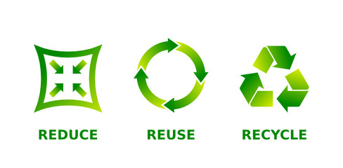
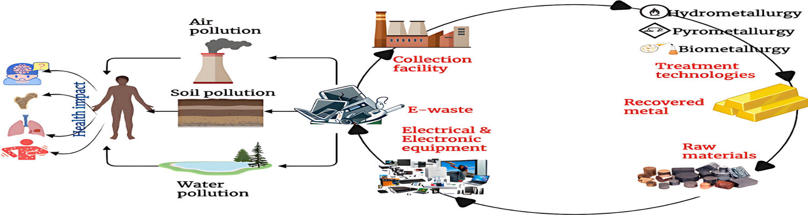

Methods and Strategies for Managing E-Waste Responsibly:
- Reduce:
- Encourage manufacturers to design products with longer lifespans and upgradeable components to minimize e-waste generation.
- Advocate for eco-friendly packaging and product designs that use recyclable materials and minimize waste.
- Reuse:
- Establish programs for refurbishing and repairing electronic devices to extend their lifespan.
- Promote the donation, resale, or redistribution of used electronics to individuals or organizations in need.
- Recycle:
- Set up convenient e-waste collection points or recycling centers for consumers, businesses, and communities.
- Partner with certified recycling facilities to ensure proper handling, dismantling, and disposal of electronic devices.
- Implement incentives and awareness campaigns to encourage participation in recycling initiatives.

Importance of Recycling, Refurbishing, and Proper Disposal:
- Environmental Protection:
- Prevent hazardous materials in e-waste from contaminating soil, water, and air.
- Reduce pollution and mitigate environmental degradation caused by improper disposal methods.
- Resource Conservation:
- Recover valuable materials such as metals, plastics, and rare earth elements through recycling processes.
- Conserve natural resources and reduce the environmental impact of resource extraction and manufacturing.
- Energy Savings:
- Reduce energy consumption and greenhouse gas emissions associated with the production of new electronic devices.
- Promote energy-efficient recycling processes and sustainable resource management practices.
Overview of the Recycling Process for Different Types of Electronic Waste:
- Collection:
- Establish collection points or drop-off locations for consumers to deposit their old electronic devices.
- Collaborate with local governments, retailers, and manufacturers to facilitate e-waste collection and transportation.
- Sorting:
- Categorize collected e-waste based on material composition and recycling requirements.
- Separate reusable components and hazardous materials for proper treatment and disposal.
- Dismantling:
- Disassemble electronic devices to access individual components and materials for recycling.
- Utilize automated processes and manual labor to disassemble devices efficiently while ensuring worker safety.
- Processing:
- Process recovered materials through shredding, sorting, and refining techniques to extract recyclable materials.
- Implement environmentally friendly technologies and treatment methods to minimize waste and pollution.
- Reuse and Recovery:
- Identify components suitable for reuse or refurbishment.
- Repair and refurbish functional electronic devices for resale or donation.
- Recover valuable materials through smelting, refining, and chemical processes for reuse in manufacturing new products.
